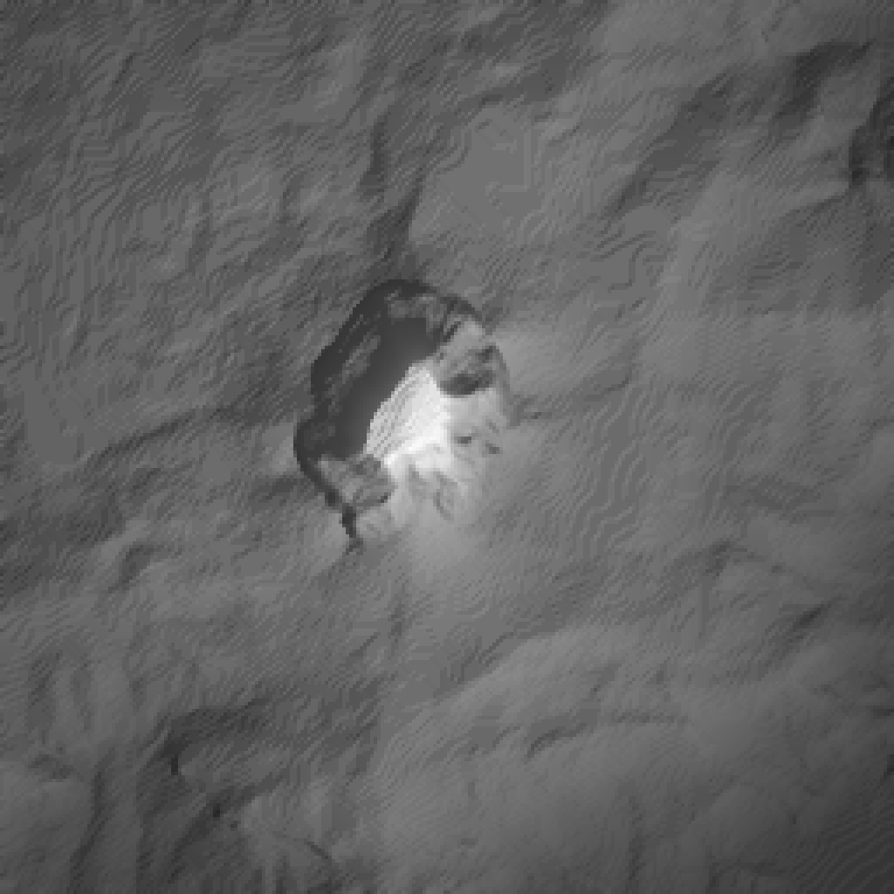
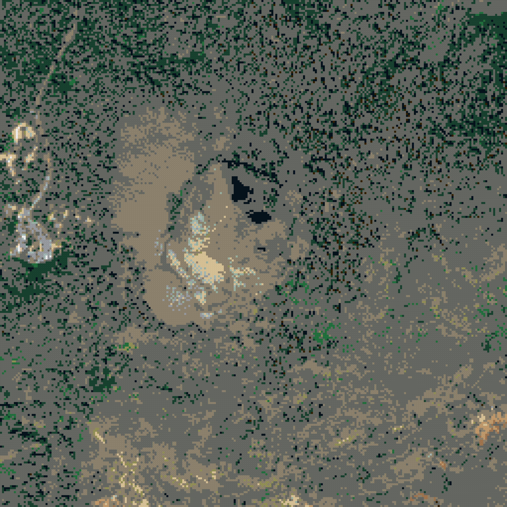
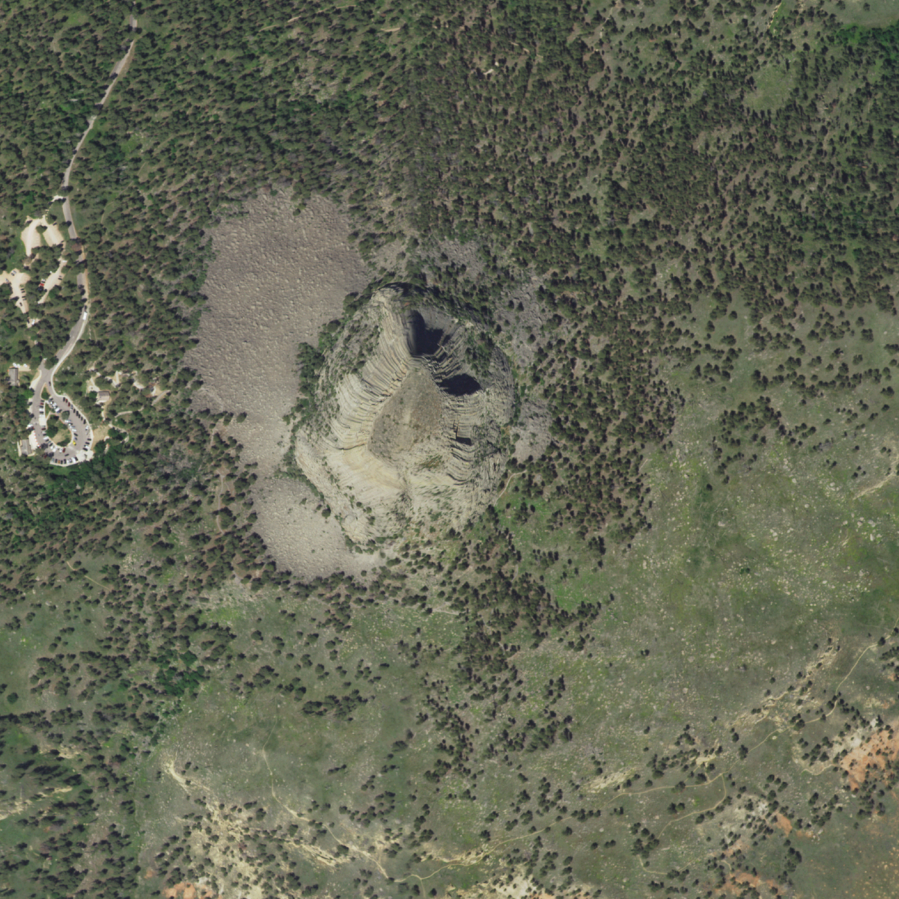

run devils-tower-20261001T191944 · generator 0.1.0+3c1a604-dirty · catalog lego-1x1-2026-10-01 · status complete
· variant
max height 240 plates = 768.0 mm · open whole-mountain 3D view



| footprint | 2048.0 × 2048.0 mm (256 × 256 studs) |
|---|---|
| geographic area | 1.00 × 1.00 km, 3.90625 m per stud, EPSG:26913 |
| datum | 1182.4 m (raw DEM min 1182.1 m) |
| summit | 1558.0 m stud-mean at stud [116, 118] (source max 1558.1 m) |
| relief above datum | 375.6 m |
| meters per plate (1×) | 1.562 |
| max height x1.0 | 240 plates / 768.0 mm |
| LDraw 72 | 40754 studs |
| LDraw 28 | 10213 studs |
| LDraw 288 | 8924 studs |
| LDraw 0 | 3036 studs |
| LDraw 2 | 590 studs |
| LDraw 19 | 538 studs |
| LDraw 308 | 421 studs |
| LDraw 330 | 368 studs |
| LDraw 71 | 253 studs |
| LDraw 378 | 166 studs |
| LDraw 371 | 95 studs |
| LDraw 323 | 92 studs |
| LDraw 84 | 52 studs |
| LDraw 15 | 18 studs |
| LDraw 78 | 10 studs |
| LDraw 80 | 3 studs |
| LDraw 70 | 2 studs |
| LDraw 272 | 1 studs |
| role | provider / dataset | date | license · attribution |
|---|---|---|---|
| elevation | USGS 3DEP 3DEPElevation (Bare Earth DEM Dynamic) | None | Public domain USGS 3D Elevation Program (3DEP) |
| imagery | USGS The National Map USGSNAIPPlus (NAIP, latest mosaic) | 2022-06-27 | Public domain USDA FSA NAIP via USGS The National Map |
| PASS | coverage_complete | non-finite DEM px: 0; non-finite imagery px: 0 |
| PASS | dem_imagery_aligned | 2 grids share bounds EPSG:26913; max extent mismatch 0.000 m |
| PASS | every_stud_has_elevation | 65536 studs |
| PASS | every_stud_has_allowed_color | all colors in catalog |
| PASS | no_terrain_below_datum | min plates per exaggeration: {'x1.0': 0} |
| PASS | quant_error_within_half_plate | max |error| plates: {'x1.0': 0.5} |
| PASS | catalog_colors_currently_produced | 18 colors used; not currently produced: [] |
| PASS | terrain_colors_plate_buildable | every used color is produced as a 1x1 plate |
| PASS | summit_position | DEM max in stud (116, 119); highest stud (116, 118); offset 1 stud(s) |
| PASS | exaggeration_invariance | 1 exaggerations share footprint [(256, 256)] and one color array per color setting (colors are computed independently of exaggeration) |
| PASS | viewer_written | 1 whole-mountain 3D viewer(s) |
| PASS | ldraw_valid:x1.0_naip_average_diffusion0.10 | 178554 elements checked |
| PASS | ldraw_seams:x1.0_naip_average_diffusion0.10 | module files together equal the full model |
{
"schemaVersion": 1,
"runId": "devils-tower-20261001T191944",
"status": "complete",
"generatorVersion": "0.1.0+3c1a604-dirty",
"createdAt": "2026-10-01T19:19:49+00:00",
"preset": {
"id": "devils-tower",
"name": "Devils Tower",
"center": {
"lat": 44.5902,
"lon": -104.7146
},
"boundingBox": {
"widthKm": 1,
"heightKm": 1
},
"targetStudWidth": 256,
"moduleStudSize": 64,
"surfaceResolutionStuds": 1,
"verticalExaggeration": 1,
"datumMode": "surrounding-minimum",
"viewpoints": [
{
"name": "Visitor Center",
"bearingDeg": 140,
"elevationDeg": 12
},
{
"name": "Joyner Ridge",
"bearingDeg": 302,
"elevationDeg": 10
}
]
},
"bounds": {
"crs": "EPSG:26913",
"minE": 522154.0,
"minN": 4936968.0,
"maxE": 523154.0,
"maxN": 4937968.0,
"metersPerStud": 3.90625,
"studWidth": 256,
"studHeight": 256
},
"scale": {
"metersPerPlateTrueScale": 1.5625,
"exaggerations": [
1
]
},
"datum": {
"mode": "surrounding-minimum",
"elevationM": 1182.4269116210937,
"rawDemMinM": 1182.0567626953125
},
"sources": [
{
"role": "elevation",
"provider": "USGS 3DEP",
"dataset": "3DEPElevation (Bare Earth DEM Dynamic)",
"sourceUrls": [
"https://elevation.nationalmap.gov/arcgis/rest/services/3DEPElevation/ImageServer/exportImage"
],
"itemIds": [],
"acquisitionDate": null,
"nativeResolutionM": 1.0,
"analysisGridPx": 2560,
"nativeCrs": "EPSG:26913",
"license": "Public domain",
"attribution": "USGS 3D Elevation Program (3DEP)",
"cacheKeys": [
"cd5c2b1d8139c038061842bbc359c2183e46f70c85edd597ff51751cd0e5c314",
"d88c6f41f95db44819fc213e7b6f18450cd654a4c767947fd1c5db9197cfc0ce",
"c900091ff478f7c8d77418649687547626f8228c10a677d4ce9abb7c1cd54d57",
"da92dd5b8e04b5a76295378754301bce526a1fb3e5f081f1a05708c3c15521db",
"71979c9cbcb6cb2057cbc4b2dd6a7762490299397cb28bd3c386d136bbb2db72",
"12ef52c05b5bb7a0b56c76101bc25a8877e7d1f39c79a7fee7900c9c48a08647",
"fff2ede031d09eba48eb4ff475702dd6c53bfb0060b4ab21793b096191ae2573",
"ef936c7d7afbd7db923383fb45c65730a8e7f6ce97846809804ad2f94c8a54cc",
"06b2b840e6a5c9dbad070effa993e30a3f9e79bd08dc8d8a180edcf6ae348696",
"f867e8aec44301e9306572b19a87689a943d1da3415f7084fffd686eb74781de",
"fe89a5795c070cc9721b1b243585366aec085de05a3465155fe99676444146a5",
"216b64d51b2439bdef1b123df49de468b72b7fee875414656d8087f67dea0653",
"37a581a86eb9957469df8c347ce6ec2b0813acedf4a9e7673556f85e453f7efc",
"c8aeb9e1c211dece12b734583d67fe0cb9ceb32f53d3c358a520c946d3c03f87",
"60ebafc1458d3c598b894e098a9f367f8da3d800a3f502d96775aed9e3edb0d2",
"3f3c31b6181d6ae5ff4be67035e758468173c3c3240024c8455120051690bcd2"
]
},
{
"role": "imagery",
"provider": "USGS The National Map",
"dataset": "USGSNAIPPlus (NAIP, latest mosaic)",
"sourceUrls": [
"https://imagery.nationalmap.gov/arcgis/rest/services/USGSNAIPPlus/ImageServer/exportImage"
],
"itemIds": [
"wy_m_4410427_nw_13_060_20220627"
],
"acquisitionDate": "2022-06-27",
"nativeResolutionM": 0.6,
"analysisGridPx": 3840,
"nativeCrs": "EPSG:26913",
"license": "Public domain",
"attribution": "USDA FSA NAIP via USGS The National Map",
"cacheKeys": [
"32b1b6c61180aacdf5d82e9f684262bf0e323c354ae582b6953bd1b3b67afe52",
"8a1d75abf7e39c9a315a2f014dc3df1c582e2735a28fa4529ce53a217c00a4af",
"f1b3597700e13edab563892d2435cbbf8ac1221864790b1cb3c1ba92e4020157",
"055ecdcfc98799ed17dd337a05ab4343041dd74764226903f09629c5f1d9f516",
"0f47775c8220823379e88a55c2334593b0206896b216be9f62723d82bbec61e0",
"db59284ecc0fc4337c3b7092a00276faf797bb900048e11cc3f57ac38bf05807",
"db761fe1ad662062f82bbba63afa735dcffc0052966f9efbbdc69b692d18eff8",
"025b1c83b8f6bd697fe1495893ae35ecfb718929ac4a92912af7bbd66174ea27",
"272a9bcb2b0f453f7e5a02ee52ac64fa36b1a73823ab2ca2bbc3612a824531a7",
"9e7fa5084f6c4cd1bd3f1b9023b0beb22d887488eb4b77158f5d87799a120683",
"2cdb23d3f72ccd01afba9e9b242a29fcacc33c626b16274b4625540105292fa0",
"b167016c4d53aabadd077a15938ed6f1d016ecec51178fea7b9d94c1ca409cfe",
"425cf7424dd7a5c976152d3f58798f7d5a8212f1a33ead30173eb2cdb391924a",
"bbcce063775e11160d07e58685f8249cf534f605120b02fc94a30631ee772ade",
"c33d0ee00e06bd97fb8a72c56532990e1ed145adcde13314273e2b80d6290696",
"ab91ae207099d5664315de0d954282a07c2249f87ccae2d4b022a72575692c50"
],
"imageryKey": "naip",
"notes": [
"acquisition date cross-referenced from Planetary Computer NAIP STAC (1 items, 2022-06-27..2022-06-27)"
]
}
],
"catalog": {
"version": "lego-1x1-2026-10-01",
"sha256": "313a874bc2e3b9a52333454ffbe36a7d309261fd5b5deb0fcd496c8ef2922d2d",
"terrainPalette": {
"rule": "colors currently produced as 1x1 plate (3024)",
"size": 47,
"excluded": []
}
},
"variants": [
{
"key": "x1.0_naip_average_diffusion0.10",
"verticalExaggeration": 1,
"color": {
"imagerySource": "naip",
"imageryDate": null,
"sampling": "average",
"assignment": "diffusion",
"diffusionStrength": 0.1
},
"metrics": {
"maxHeightPlates": 240,
"maxHeightMm": 768.0,
"colorDistribution": {
"0": 3036,
"2": 590,
"15": 18,
"19": 538,
"28": 10213,
"70": 2,
"71": 253,
"72": 40754,
"78": 10,
"80": 3,
"84": 52,
"272": 1,
"288": 8924,
"308": 421,
"323": 92,
"330": 368,
"371": 95,
"378": 166
}
}
}
],
"summary": {
"geographicWidthM": 1000.0,
"geographicHeightM": 1000.0,
"physicalWidthMm": 2048.0,
"physicalDepthMm": 2048.0,
"summitStud": [
116,
118
],
"summitElevationM": 1557.98578125,
"summitSourceElevationM": 1558.0689697265625,
"reliefM": 375.5588696289062
},
"outputs": {
"canonical": {
"path": "canonical.npz",
"sha256": "4744369686805c81027e3a8f2329ea7cc0d14597b9751f6d01be2edf305b07e0"
},
"preview:height-x1.0": {
"path": "previews/height-x1.0.png",
"sha256": "a255c73fc56dad5108036c011c21be4848d644002eded21e579b92fed21af09b"
},
"preview:color-naip_average_diffusion0.10": {
"path": "previews/color-naip_average_diffusion0.10.png",
"sha256": "4a1dc650ca1213e42888cb921f7cd85b18737b64e1a38e5a7447d269c1e1d54d"
},
"preview:imagery-naip": {
"path": "previews/imagery-naip.png",
"sha256": "f418cb57780acb73aae29ecba64ec712f32de0be97c94381c3304677281c9a94"
},
"viewer:x1.0_naip_average_diffusion0.10": {
"path": "viewer/x1.0_naip_average_diffusion0.10.html",
"sha256": "4d8ab21e3b9ed1591b319cd35170b2cd34554f7e2c7642820800c5ac9048de5e"
},
"ldraw:x1.0_naip_average_diffusion0.10:Module_A1": {
"path": "ldraw/x1.0_naip_average_diffusion0.10/Module_A1.ldr",
"sha256": "f1e924920b38f7b4680e3377a900764ecbcc2478e3d71fcf3174d3201b1b472d"
},
"ldraw:x1.0_naip_average_diffusion0.10:Module_A2": {
"path": "ldraw/x1.0_naip_average_diffusion0.10/Module_A2.ldr",
"sha256": "9815e0b8c279c86909d578d600880f2dd7d0cf60f10d2be0cc506bd11553ea1a"
},
"ldraw:x1.0_naip_average_diffusion0.10:Module_A3": {
"path": "ldraw/x1.0_naip_average_diffusion0.10/Module_A3.ldr",
"sha256": "341e378c0015ef89eed12711d482b13035aa75a2a1c93e389bc6fb0a8c0052f1"
},
"ldraw:x1.0_naip_average_diffusion0.10:Module_A4": {
"path": "ldraw/x1.0_naip_average_diffusion0.10/Module_A4.ldr",
"sha256": "d9ee7fc138fe7959e54f895a685cd26c703f5e2ba969150aeecbc9c539c20e76"
},
"ldraw:x1.0_naip_average_diffusion0.10:Module_B1": {
"path": "ldraw/x1.0_naip_average_diffusion0.10/Module_B1.ldr",
"sha256": "3fb94b2ac0a14e59393b808a7db052a3a219d35199595a202eb35575154f7117"
},
"ldraw:x1.0_naip_average_diffusion0.10:Module_B2": {
"path": "ldraw/x1.0_naip_average_diffusion0.10/Module_B2.ldr",
"sha256": "96da95b149da0b1bcb99fc0423e28a0a3738f533ee83f959eaaa3a9e5c1f7960"
},
"ldraw:x1.0_naip_average_diffusion0.10:Module_B3": {
"path": "ldraw/x1.0_naip_average_diffusion0.10/Module_B3.ldr",
"sha256": "f62b3102807cc1f5c3efaa3fb1065fc0af951b4294d24e09b4be849eb19934cb"
},
"ldraw:x1.0_naip_average_diffusion0.10:Module_B4": {
"path": "ldraw/x1.0_naip_average_diffusion0.10/Module_B4.ldr",
"sha256": "b1bcdf164dbfaf31046dccba04d946af8cabee57a268cdf0f2ae52afe5211f78"
},
"ldraw:x1.0_naip_average_diffusion0.10:Module_C1": {
"path": "ldraw/x1.0_naip_average_diffusion0.10/Module_C1.ldr",
"sha256": "d6dd634d788f00e085dbec7c906e6bd8e70afdfa3af8dca4912ca31757effd36"
},
"ldraw:x1.0_naip_average_diffusion0.10:Module_C2": {
"path": "ldraw/x1.0_naip_average_diffusion0.10/Module_C2.ldr",
"sha256": "9f6759e990dd8caf38f869c7f9daeea2b4d4a091711a84ad55d719e15950cfab"
},
"ldraw:x1.0_naip_average_diffusion0.10:Module_C3": {
"path": "ldraw/x1.0_naip_average_diffusion0.10/Module_C3.ldr",
"sha256": "e9e84533239bb063be294dddb43acdb5f1ec166693112f2e97eca6d34c8e01b5"
},
"ldraw:x1.0_naip_average_diffusion0.10:Module_C4": {
"path": "ldraw/x1.0_naip_average_diffusion0.10/Module_C4.ldr",
"sha256": "0ff909fdb2f410de7778f191a4cfef7f28a881baf919de89a3e81d4c2c5bcdf2"
},
"ldraw:x1.0_naip_average_diffusion0.10:Module_D1": {
"path": "ldraw/x1.0_naip_average_diffusion0.10/Module_D1.ldr",
"sha256": "fae57ec85cb32eb6b72a2b43ab1f125806d9280932e804793f533d562d85e75e"
},
"ldraw:x1.0_naip_average_diffusion0.10:Module_D2": {
"path": "ldraw/x1.0_naip_average_diffusion0.10/Module_D2.ldr",
"sha256": "8baff2d1b12e44b8aed79accc754ef69fd3b0b18e02762c2c1841845a0e11504"
},
"ldraw:x1.0_naip_average_diffusion0.10:Module_D3": {
"path": "ldraw/x1.0_naip_average_diffusion0.10/Module_D3.ldr",
"sha256": "25e5eb76876c49f71198d3d0267808ac00ccdf998664b642b48d7d37677e9150"
},
"ldraw:x1.0_naip_average_diffusion0.10:Module_D4": {
"path": "ldraw/x1.0_naip_average_diffusion0.10/Module_D4.ldr",
"sha256": "aec1cbca4d5c3be35b9f1acc9056ae5bba2533538d9eae572af58fe07bf20ae3"
},
"ldraw:x1.0_naip_average_diffusion0.10:full": {
"path": "ldraw/x1.0_naip_average_diffusion0.10/Devils_Tower.mpd",
"sha256": "8a180af0db2f047a0b0c7a2788f99e06c424883445316cb3e438c35d1be2626a"
}
},
"validation": [
{
"check": "coverage_complete",
"passed": true,
"detail": "non-finite DEM px: 0; non-finite imagery px: 0"
},
{
"check": "dem_imagery_aligned",
"passed": true,
"detail": "2 grids share bounds EPSG:26913; max extent mismatch 0.000 m"
},
{
"check": "every_stud_has_elevation",
"passed": true,
"detail": "65536 studs"
},
{
"check": "every_stud_has_allowed_color",
"passed": true,
"detail": "all colors in catalog"
},
{
"check": "no_terrain_below_datum",
"passed": true,
"detail": "min plates per exaggeration: {'x1.0': 0}"
},
{
"check": "quant_error_within_half_plate",
"passed": true,
"detail": "max |error| plates: {'x1.0': 0.5}"
},
{
"check": "catalog_colors_currently_produced",
"passed": true,
"detail": "18 colors used; not currently produced: []"
},
{
"check": "terrain_colors_plate_buildable",
"passed": true,
"detail": "every used color is produced as a 1x1 plate"
},
{
"check": "summit_position",
"passed": true,
"detail": "DEM max in stud (116, 119); highest stud (116, 118); offset 1 stud(s)"
},
{
"check": "exaggeration_invariance",
"passed": true,
"detail": "1 exaggerations share footprint [(256, 256)] and one color array per color setting (colors are computed independently of exaggeration)"
},
{
"check": "viewer_written",
"passed": true,
"detail": "1 whole-mountain 3D viewer(s)"
},
{
"check": "ldraw_valid:x1.0_naip_average_diffusion0.10",
"passed": true,
"detail": "178554 elements checked"
},
{
"check": "ldraw_seams:x1.0_naip_average_diffusion0.10",
"passed": true,
"detail": "module files together equal the full model"
}
],
"exportMode": "both",
"ldrawCounts": {
"x1.0_naip_average_diffusion0.10": {
"Module_A1": 6586,
"Module_A2": 5592,
"Module_A3": 5553,
"Module_A4": 6026,
"Module_B1": 5623,
"Module_B2": 6086,
"Module_B3": 5554,
"Module_B4": 5471,
"Module_C1": 5702,
"Module_C2": 5170,
"Module_C3": 4608,
"Module_C4": 5347,
"Module_D1": 6435,
"Module_D2": 5556,
"Module_D3": 5036,
"Module_D4": 4932,
"Devils_Tower": 89277
}
}
}